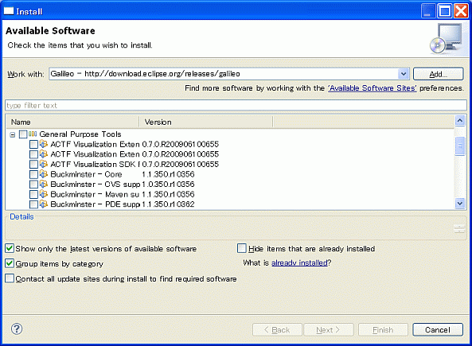

Installation guide to use ACTF Visualization in Web/J2EE/PHP perspectives
- Launch Eclipse Install dialog from Help -> Install New Software -> Add menu.
- Select Galileo update site (http://download.eclipse.org/releases/galileo). (see Figure 1)
- Select ACTF Visualization Extension for PDT Feature (for PHP perspective) and ACTF Visualization Extension for WST Feature (for Web/J2EE perspective) under General Purpose Tools category.
- Select Next and follow installation wizard.

Figure 1. Install dialog
Go to Index